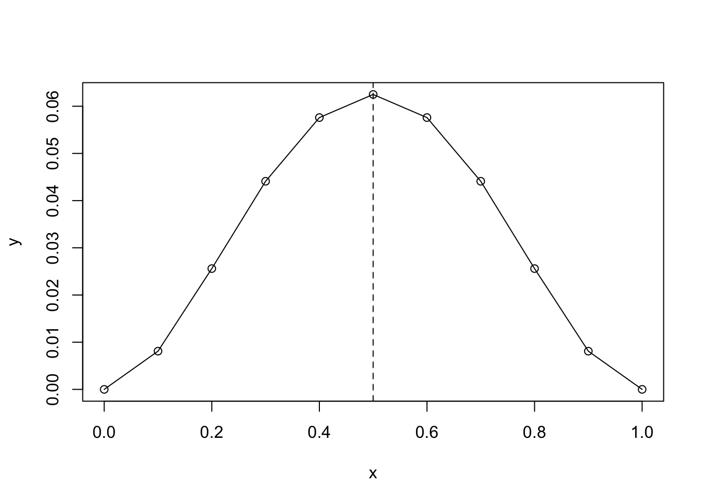

4 Common Statistical Tests
| \(_X \ ^Y\) | dummy | continuous |
|---|---|---|
| dummy | (2) difference in proportions or odds ratio | (1) two-sample t-test |
| categorical | (3) chi-squared test | (4) ANOVA |
| continuous | (6) logistic regression | (5) linear regression |
4.1 Dummy (X) - Continuous (Y)
RCT or Randomized Controlled Trial is the prime example of an Experiment Design, where the independent variable X is a dummy variable.
4.1.1 Two-sample T-Test
Given two samples
\[Y_{T_i} \sim \forall \left( \mu_T, \sigma_T^2 \right) ~~~~ and ~~~~ Y_{C_j} \sim \forall \left( \mu_C, \sigma_C^2 \right) \] where \(i = 1,2,3,...,n_T\) and \(j = 1,2,3,...,n_C\)
and
\[\bar{Y}_T = \frac{1}{n_T} \sum Y_{T_i} ~~~~ and ~~~~ \bar{Y}_C = \frac{1}{n_C} \sum Y_{C_i}\]
The estimand and estimator that are of interest to us are as follows.
- estimand: \(\Delta = \mu_T - \mu_C\)
- estimator: \(\hat{\Delta} = \bar{Y}_T - \bar{Y}_C\).
The estimand is a constant (because it’s a population parameter) and the estimator is a random variable. Hence, we are immediately interested in the properties of the estimator.
Question: What are the properties of the estimator \(\hat{\Delta}\)?
Answers:
- \(E(\hat{\Delta}) = \mu_T - \mu_C\)
- \(Var(\hat{\Delta}) = \frac{\sigma_T^2}{n_T} + \frac{\sigma_C^2}{n_C}\)
- \(shape(\hat{\Delta}) = N\)
or equivalently
\[\hat{\Delta} \sim N \left( \mu_T - \mu_C, ~ \frac{\sigma_T^2}{n_T} + \frac{\sigma_C^2}{n_C} \right)\]
Proof of the properties of \(\hat{\Delta}\) is as follows.
Proof:
Prerequisites\[Var(X+Y) = Var(X) + 2Cov(X,Y) + Var(Y)\]
\[Var(X-Y) = Var(X) - 2Cov(X,Y) + Var(Y)\]
When X and Y are independent, i.e., \(X \perp Y\), we have \(Cov(X,Y)=0\) and hence
\[Var(X \pm Y) = Var(X) + Var(Y)\]
ProofConsidering the CLT, \[\bar{Y}_{T} \sim N \left( \mu_T, ~ \frac{\sigma_T^2}{n_T} \right) ~~~~ and ~~~~ \bar{Y}_{C} \sim N \left( \mu_C, ~ \frac{\sigma_C^2}{n_C} \right) \]
we have the following
\[E(\hat{\Delta}) = E(\bar{Y}_T - \bar{Y}_C) = E(\bar{Y}_T) - E(\bar{Y}_C) = \mu_T - \mu_C = \Delta\] and \[Var(\hat{\Delta}) = Var(\bar{Y}_T - \bar{Y}_C) = Var(\bar{Y}_T) + Var(\bar{Y}_C) = \frac{\sigma_T^2}{n_T} + \frac{\sigma_C^2}{n_C}\]
Now, given what we know about the properties of \(\hat{\Delta}\) and the CLT, we have
\[z = \frac{ \hat{\Delta} - \Delta }{ \text{se}(\Delta) } = \frac{ (\bar{Y}_T - \bar{Y}_C) - (\mu_T - \mu_C) }{ \sqrt{ \frac{\sigma_T^2}{n_T} + \frac{\sigma_C^2}{n_C} } }\]
At this point, \(\sigma_T\) and \(\sigma_C\) are unknown to us. As a result, we need to use sample variances to replace population variances and the z-statistic would thus become a t-statistic.
\[t = \frac{ (\bar{Y}_T - \bar{Y}_C) - (\mu_T - \mu_C) }{ \sqrt{ \frac{s_T^2}{n_T} + \frac{s_C^2}{n_C} } }\] with \(\text{df} = \text{df}_T + \text{df}_C = (n_T-1) + (n_C-1)\)
To conduct hypothesis test, we have
- propose the hypothesis
\(H_0: \Delta = \mu_T - \mu_C = 0\), where \(H_0\) is called the null hypothesis
\(H_a: \Delta = \mu_T - \mu_C \ne 0\), where \(H_a\) is called the alternative hypothesis
- compute a probability under the hypothesis
\[t = \frac{ \bar{Y}_T - \bar{Y}_C }{ \sqrt{ \frac{s_p^2}{n_T} + \frac{s_p^2}{n_C} } }\]
Under the null hypothesis that the two samples are from the same population, it is natural for us to combine the two sample varinances.
\[s_p^2 = \frac{\text{df}_C}{\text{df}_C+\text{df}_T} s_C^2 + \frac{\text{df}_T}{\text{df}_C+\text{df}_T} s_T^2 = \frac{(n_C-1)}{(n_C-1) + (n_T-1)}s_C^2 + \frac{(n_T-1)}{(n_C-1) + (n_T-1)}s_T^2\]
We can then compute the p-value using the following R code.
p_value = 2 * ( 1 - pt(t, df=(nt-1)+(nc-1)) )- make a decision
Make a decison based on pre-determined confidence level, i.e. \(1 - \alpha\), where \(\alpha=0.05\) by default.
4.1.2 Statistical Power
(Coursera - Johns Hopkins - DSJH6-10 Statistical Inference/Week 4/Module 11:Power)(Zhu-Qiuxia)
- type I error rate \(\alpha\)
- specificity \(1-\alpha\)
- type II error rate \(\beta\)
- sensitivity or power \(1-\beta\)
Note: CV stands for critical value.
Question: Assuming that (a) the treatment and control groups have identical sample size \(n\), (b) \(\alpha = 0.05\), and (c) \(\beta = 0.80\), what is the smallest \(n\) required to detect a true difference of size \(\Delta\)?
Answer:
\[n = \frac{2 s_p^2 ( z_{(1-\frac{\alpha}{2})} - z_\beta )^2}{\Delta^2} \approx \frac{16s_p^2}{\Delta^2}\] where \[s_p^2 = \frac{(n_C-1)}{(n_C-1) + (n_T-1)}s_C^2 + \frac{(n_T-1)}{(n_C-1) + (n_T-1)}s_T^2\]
The proof for the formula above is as follows.
Proof:
\[z_{(1-\frac{\alpha}{2})} = \frac{\text{CV}-0}{\text{se}} ~~~~ \rightarrow ~~~~ \text{CV} = z_{(1-\frac{\alpha}{2})} \cdot \text{se}\] where \(\alpha=0.05\) by default and hence \(z_{(1-\alpha/2)} = 1.96\).
\[z_\beta = \frac{\text{CV} - \Delta}{\text{se}} ~~~~ \rightarrow ~~~~ \text{CV} = \Delta + z_\beta \cdot \text{se}\] where \(\beta=0.80\) by default and hence \(z_\beta = -0.84\).
Through equating \(\text{CV}\), we have
\[z_{(1-\frac{\alpha}{2})} \cdot \text{se} = \Delta + z_\beta \cdot \text{se}\] and hence
\[(z_{(1-\frac{\alpha}{2})} - z_\beta) \cdot \text{se} = \Delta ~~~~ \rightarrow ~~~~~ \text{se} = \frac{\Delta}{z_{(1-\frac{\alpha}{2})} - z_\beta}\]
Moreover, with the assumption that treatment and control groups have the same sample size \(n\) and using the pooled variance, we have
\[\text{se}^2 = \frac{s_T^2}{n_T} + \frac{s_C^2}{n_C} = \frac{2s_p^2}{n}\]
\[\text{se}^2 = \left( \frac{\Delta}{z_{(1-\frac{\alpha}{2})} - z_\beta} \right)^2 = \frac{2s_p^2}{n}\] and hence \[n = \frac{2 s_p^2 ( z_{(1-\frac{\alpha}{2})} - z_\beta )^2}{\Delta^2} = \frac{2 \cdot 7.84 \cdot s_p^2}{\Delta^2} \approx \frac{16s_p^2}{\Delta^2} = \left( \frac{4s_p}{\Delta} \right)^2\] where \(( z_{(1-\frac{\alpha}{2})} - z_\beta )^2 = (1.96 + 0.84)^2 = 7.84\).
Given the formula above, we can answer the following questions.
Question: What factors can result in a smaller sample size?
Answers:
- larger \(\alpha\)
- larger \(\beta\)
- smaller \(s_p^2\)
- larger \(\Delta\)
By rearranging the formula above, we have
\[z_\beta = z_{(1-\frac{\alpha}{2})} - \sqrt{ \frac{n\Delta^2}{2s_p^2} }\]
Question: What factors would result in larger statistical power?
Answers:
- larger \(n\)
- smaller \(s_p^2\)
- larger \(\alpha\)
- larger \(\Delta\)
Tip: To answer this question, think about the graph not the formula.
4.2 Dummy (X) - Dummy (Y)
4.2.1 Basics
4.2.1.1 Bernoulli Distribution
A random variable Y following a Bernoullie distribution can be expressed as follows.
\[Y \sim Bern(\pi)\] where Y = 1 with probability \(\pi\) and Y = 0 with probability \(1-\pi\).
Based on the definitions of E(Y) and Var(Y), we have
\[E(Y) = \sum Y \cdot P(Y) = 1 \cdot \pi + 0 \cdot (1-\pi) = \pi\] and
\[Var(Y) = E(Y - EY)^2 = \sum (Y - EY)^2 \cdot P(Y) = (1-\pi)^2 \cdot \pi + (0-\pi)^2 \cdot (1-\pi)\] \[= (\pi^2 - 2\pi + 1)\pi + \pi^2 (1-\pi) = \pi - \pi^2 = \pi(1-\pi)\]
Hence the properties of the random variable Y can be expressed as \[Y \sim Bern(\pi, \pi(1-\pi))\]
Given the CLT, we therefore have \[\bar{Y} \sim N \left( \pi, \frac{\pi(1-\pi)}{n} \right)\]
4.2.1.2 Inference with One Variance
TODO: Contents to be added!
4.2.2 Difference in Proportions
| \(_X \ ^Y\) | Outcome=No (0) | Outcome=Yes (1) | column total |
|---|---|---|---|
| Control (0) | a | b | n |
| Treatment (1) | c | d | n |
where \(a+b=n\) and \(c+d=n\). To note, treatment and control groups do not have to have the same sample size n. We deliberately make them to be identical in order to emphasize that row totals can be set beforehand.
\[p_T = P(Y=1|X=1) = \frac{d}{c+d}\] and \[p_C = P(Y=1|X=0) = \frac{b}{a+b}\]
Similar to two sample t-test, we have
\[\hat{\Delta} \sim N \left( \pi_T-\pi_C, ~ \sqrt{\frac{\pi_T(1-\pi_T)}{n_T} + \frac{\pi_T(1-\pi_C)}{n_C}} \right)\]
- propose a hypothesis
The two samples are from the same distribution, i.e.,
\(H_0: \Delta=\pi_T-\pi_C = 0\)
\(H_a: \Delta=\pi_T-\pi_C \ne 0\)
- compute the probability under the hypothesis
Since the two samples are from the same distribution, we can compute a pooled variance
\[\pi_p = \frac{\sum Y_{T_i} + \sum Y_{C_i}}{n_T+n_C}\] and hence
\[z = \frac{\hat{\Delta}}{\text{se}(\hat{\Delta})} = \frac{\hat{\Delta}}{\sqrt{\pi_p(1-\pi_p) (\frac{1}{n_T}+\frac{1}{n_C})}}\]
To note, since no unknown \(\sigma\) is involved, we can simply use the z-statistic instead of the t-statistic.
- make a decision
Make a decison based on pre-determined confidence level, i.e. \(1 - \alpha\), where \(\alpha=0.05\) by default.
One problem with difference in proportions is that it does not handle small proportions well. For example, is \(\hat{\Delta} = 0.05\) a small or big difference? It would be considered small if it’s between 0.95 and 0.90; but would be a big difference if it’s between 0.10 and 0.15.
4.2.3 Relative Risks
An alternative statistic is called relative risks.
\[RR = \frac{p_T}{p_C}\]
Now we need to derive the properties of RR. In general, it is extremely difficult to deal with products or quotients of random variables. One way to tackle this is to use log-transformation.
- \(\log(XY) = \log(X) + \log(Y)\)
- \(\log(\frac{X}{Y}) = \log(X) - \log(Y)\)
- \(\log(X^Y) = Y \log(X)\)
Log-transformation can easily reduce products and quotients into sums. In our case, we have
\[\log RR = \log p_T - \log p_C\] and
\[\text{se}(\log RR) = \sqrt{\frac{1-\pi_T}{n_T}+\frac{1-\pi_C}{n_C}}\]
Proof of the formula above is as follows.
Proof:
Prerequisites\[Var(f(x)) = Var(X) \cdot (f'(x))^2\] where \(f'(x)\) is the first derivative of \(f(x)\) with respect to x.
In our case, \[Var(\log p) = Var(p) \left( \frac{1}{p} \right)^2 = \frac{p(1-p)}{np^2} = \frac{1-p}{np}\]
Proof\[Var(\log RR) = Var(\log p_T - \log p_C) = Var(\log p_T) + Var(\log p_C) = \frac{1-p_T}{n_Tp_T} + \frac{1-p_C}{n_Cp_C}\]
Under the null hypothesis, i.e., \(\pi_T = \pi_C\), we have \(E(\log RR) = 0\), and hence
\[z = \frac{\log p_T - \log p_C}{\sqrt{\frac{1-p_T}{n_T}+\frac{1-p_C}{n_C}}}\]
For confidence interval, we have
\[[L, U] = \log \frac{p_T}{p_C} \pm z_{(1-\frac{\alpha}{2})} \cdot \sqrt{\frac{1-p_T}{n_T}+\frac{1-p_C}{n_C}}\]
To convert the confidence interval back to the original scale, we have \([e^L, e^U]\).
One problem with relative risks is that it is not appropriate for case-control design.
| \(_X \ ^Y\) | Cancer=No (0) | Cancer=Yes (1) |
|---|---|---|
| Smoking=No (0) | a | b |
| Smoking=Yes (1) | c | d |
| column total | n | n |
where \(a+c=n\) and \(b+d=n\). To note, cancer or non-cancer groups do not have to have the same sample size n. We deliberately make them to be identical in order to emphasize that column totals can be set beforehand.
\[p_T = P(X=1|Y=1) = \frac{d}{b+d}\] and \[p_C = P(X=1|Y=0) = \frac{c}{a+c}\]
In a case like this one, we cannot perform an experiment and forcibly assign people into treatment and control groups. Instead, we find the same number of people with or without cancer and investigate the proportion of smokers. A study like this is called a case-control study.
4.2.4 Odds Ratio
An alternative statistic is called odds ratio.
\[\text{odds} \overset{1^*}{=} \frac{p}{1-p} \overset{2^*}{=} \frac{\text{total # of success}}{\text{total # of failure}} \]
- by definition \(1^*\): Given \(p = 1/4\), we have odds = (1/4) / (3/4) = 1/3
- by definition \(2^*\): If odds of success is x, odds of failure is 1/x
- by definition \(2^*\): Given odds = 1/3, we have p = 1/3 / (1/3 + 1) = 1/4
\[p = \frac{\text{odds}}{\text{odds}+1}\]
Consider the contingency table below, where rows represent the independent variable X and columns represent the dependent variable Y.
| \(_X \ ^Y\) | 0 | 1 |
|---|---|---|
| 0 | a | b |
| 1 | c | d |
Let \(p_C\) represents the probability of Y=1 given X=0 and \(p_T\) represents the probability of Y=1 given X=1. We would thus have
\[p_C=\frac{b}{a+b} ~~~~ \rightarrow ~~~~ \text{odds}_C=\frac{p_C}{1-p_C} = \frac{a}{a+b} \cdot \frac{a+b}{b} = \frac{a}{b}\] and
\[p_T=\frac{d}{c+d} ~~~~ \rightarrow ~~~~ \text{odds}_T=\frac{p_T}{1-p_T} = \frac{d}{c+d} \cdot \frac{c+d}{c} = \frac{d}{c}\]
Therefore, we have
\[\hat{\theta} = \frac{\text{odds}_T}{\text{odds}_C} = \frac{p_T}{1-p_T} \cdot \frac{1-p_C}{p_C} = \frac{a}{b} \cdot \frac{d}{c} = \frac{ad}{bc}\]
To note, for the contingency table above, if we treat rows as Y and columns as X and recompute the odds ratio \(\hat{\theta}\). We would end up getting exactly the same result. Compared to relative risks, odds ratio is superior in the aspect such that it can handle the case-control study.
Practice: Compute the odds ratio with the assumption of a case-control study.
In order to conduct hypothesis testing, we now need to consider the standard error of the odds ratio. Similar to the case of relative risks, to simplify the derivation, we will consider the standard error of the log of odds ratio instead of odds ratio, i.e., \(\log(\hat{\theta})\).
Under the null hypothesis that the two ratios are identical, we have \(\log(\hat{\theta}) = \log(1) = 0\). Given the CLT, we therefore have
\[z = \frac{\log(\hat{\theta})}{\text{se}(\log(\hat{\theta}))}\] where \(\hat{\theta}\) is the empirical odds ratio computed from the two samples and
\[\text{se}(\log(\hat{\theta})) = \sqrt{ \frac{1}{a} + \frac{1}{b} + \frac{1}{c} + \frac{1}{d} }\]
The proof of the formula above is as follows.
Proof:
Prerequisites\[Var(f(x)) = Var(X) \cdot (f'(x))^2\] where \(f'(x)\) is the first derivative of \(f(x)\) with respect to x.
In our case, for example,
\[Var(\log(\text{odds})) = Var \left( \log(\frac{p}{1-p}) \right) = Var(p) \cdot \left( \frac{1}{p(1-p)} \right)^2 = \frac{\pi(1-\pi)}{n} \cdot \frac{1}{(\pi(1-\pi))^2}\] \[= \frac{1}{n\pi(1-\pi)}\] where \[\left( \log(\frac{p}{1-p}) \right)' = ( \log(p) - \log(1-p) )' = \frac{1}{p} - \frac{-1}{1-p} = \frac{1}{p(1-p)}\]
Proof\[Var(\log(\hat{\theta})) = Var \left( \log(\frac{\text{odds}_T}{\text{odds}_C}) \right) = Var(\log(\text{odds}_T) - \log(\text{odds}_C))\] \[= \frac{1}{n_Tp_T(1-p_T)} + \frac{1}{np_C(1-p_C)} = \frac{c+d}{cd} + \frac{a+b}{ab} = \frac{1}{a} + \frac{1}{b} + \frac{1}{c} + \frac{1}{d}\] where \[p_T = \frac{d}{c+d} ~~~~ \rightarrow ~~~~ n_Tp_T(1-p_T) = (c+d) \cdot \frac{d}{c+d} \cdot \frac{c}{c+d} = \frac{cd}{c+d}\] and \[p_C = \frac{a}{a+b} ~~~~ \rightarrow ~~~~ n_Cp_C(1-p_C) = (a+b) \cdot \frac{b}{a+b} \cdot \frac{a}{a+b} = \frac{ab}{a+b}\]
4.3 Categorical (X) - Dummy (Y)
Now that we can deal with a 2-by-2 contingency table. We need to generalize it to handle I-by-J contingency tables, where I and J can be greater than 2.
4.3.1 Basics
For the sake of clarity, in the presentation below, we will continue using a 2-by-2 contingency table. However, any conclusions we draw are readily generalizable to I-by-J tables.
| \(_X \ ^Y\) | 0 | 1 | row total |
|---|---|---|---|
| 0 | a | b | a+b |
| 1 | c | d | c+d |
| column total | a+c | b+d | n |
where \(n = a + b + c + d\).
4.3.1.1 Marginal, Conditional, and Joint Probabilities
- marginal probability: \(P(Y)\) or \(P(X)\)
\[P(Y=0) = \frac{a+c}{n} ~~~~ and ~~~~ P(Y=1) = \frac{b+d}{n}\] or \[P(X=0) = \frac{a+b}{n} ~~~~ and ~~~~ P(X=1) = \frac{c+d}{n}\]
- conditional probability: \(P(Y|X)\) or \(P(X|Y)\)
\[P(Y=0|X=0) = \frac{a}{a+b} ~~~~ and ~~~~ P(Y=1|X=0) = \frac{b}{a+b}\] \[P(Y=0|X=1) = \frac{c}{c+d} ~~~~ and ~~~~ P(Y=1|X=1) = \frac{d}{c+d}\] or \[P(X=0|Y=0) = \frac{a}{a+c} ~~~~ and ~~~~ P(X=1|Y=0) = \frac{c}{a+c}\] \[P(X=0|Y=1) = \frac{b}{b+d} ~~~~ and ~~~~ P(X=1|Y=1) = \frac{d}{b+d}\]
- joint probability: \(P(X,Y)\)
\[P(X=0,Y=0) = \frac{a}{n}\] \[P(X=0,Y=1) = \frac{b}{n}\] \[P(X=1,Y=0) = \frac{c}{n}\] \[P(X=1,Y=1) = \frac{d}{n}\]
Practice: Given the table below, compute \(P(X=0,Y=1)\), \(P(X=0)\), \(P(Y=1)\).
| \(_X \ ^Y\) | 0 | 1 | row total |
|---|---|---|---|
| 0 | 2 | 4 | 6 |
| 1 | 10 | 20 | 30 |
| column total | 12 | 24 | 36 |
4.3.1.2 Independence in a Contingency Table
Two variables are regarded as independent if any one of the three following conditions are met.
- \(P(Y|X) = P(Y)\)
- \(P(X|Y) = P(X)\)
- \(P(X,Y) = P(X)P(Y)\)
To further explain it, we will focus on the first condition. The first condition is more complicated than what meets the eye. From the simplest to the most detailed, the first condition can be expressed as follows.
- simplest expression:
- \(P(Y|X) = P(Y)\)
- more detailed expression:
- \(P(Y|X=0) = P(Y|X=1) = P(Y)\)
- most detailed expression:
- \(P(Y=0|X=0) = P(Y=0|X=1) = P(Y=0)\)
- \(P(Y=1|X=0) = P(Y=1|X=1) = P(Y=1)\)
These expressions are saying exactly the same thing; they differ only in the amount of details presented. To note, for the claim of independence to hold, \(P(Y|X=0) = P(Y|X=1) = P(Y)\) must be true for each level of Y. In other words, all equations subsumed under the most detailed expression must hold so that the more detailed expression would hold.
Regardless which form of expression we use, \(P(Y|X) = P(Y)\) clearly suggests
- the distribution of Y does not depend on X
- the distribution of Y is the same at each level of X
- whether we consider X or not (i.e., conditioned on X or not) does not affect the distribution of Y
4.3.1.3 Null Hypothesis and Independence
In the 2-by-2 contingency table, the following two claims are equivalent.
- the null hypothesis \(H_0: p_T = p_C\)
- random variables X and Y are independent
Proof:
By definition, we have \(p_C = P(Y=1|X=0)\) and \(p_T = P(Y=1|X=1)\).
Under the null hypothesis \(p_C = p_T\), we have \(P(Y=1|X=0) = P(Y=1|X=1)\), which implies
- \(P(Y=1|X=0) = P(Y=1|X=1) = P(Y=1)\)
- \(P(Y=0|X=0) = P(Y=0|X=1) = P(Y=0)\)
or equivalently
- \(P(Y|X=0) = P(Y|X=1) = P(Y)\)
which clearly shows that X and Y are independent.
4.3.2 Chi-squared Test
Given an \(I \times J\) table, where rows represent X with I levels and columns represent Y with J levels. Let’s use \(n_{ij}\) to denote the number of counts in the i-th row and j-th column and use \(n\) to represent the total number of cases in the sample.
4.3.2.1 Poisson Distribution
\[X \sim Pois(\lambda)\] and \[f(x) = \frac{e^{-\lambda} \cdot \lambda^x}{x!}\]
A special property about Poisson distribution is that \(E(X) = Var(X) = \lambda\). Since X is a random variable, with regard to \(X \sim \forall(E(X), Var(X))\), we have
\[X \sim Pois(\lambda, \lambda)\] In the introduction of CLT, we have learned that any random disturbances added together would eventually give rise to normality. Poisson distribution is essentially a distribution for counting, i.e., a sum of individual counts. As a result, with reasonably large sample size under the iid assumption, we have
\[X \sim N(\lambda, \lambda)\] which is a normal approximation to the Poisson distribution.
4.3.2.2 Expected Cell Counts Under Independence
In a 2-by-2 table, we can use a, b, c, d to represent the four cell counts. This notation system, however, cannot be readily generalized to I-by-J tables. Starting from here, we will use the following notation.
- \(n_{ij}\) is the cell count for the i-th row and j-th column
- \(n_{i+}\) is the total row count for the i-th row across columns
- \(n_{+j}\) is the total column count for the j-th column across rows
- \(n\) is the total sample size across all rows and columns
Given an I-by-J table, under the independence assumption, the expected cell count \(\hat{\mu}_{ij}\) for the i-th row and j-th column is
\[\hat{\mu}_{ij} = \frac{n_{i+}n_{+j}}{n}\]
Proof:
Under the independence assumption, we have \(p_{ij} = p_{i+}p_{+j}\) and hence
\[\frac{\hat{\mu}_{ij}}{n} = \frac{n_{i+}}{n} \cdot \frac{n_{+j}}{n} ~~~~ \rightarrow ~~~~ \hat{\mu}_{ij} = \frac{n_{i+}n_{+j}}{n}\]
4.3.2.3 Chi-squared Distribution
Regardless of its fancy name, chi-squared distribution with 1 degree of freedom is simply a z-score squared.
\[z^2 \sim \chi_{df=1}^2\] and \[\sum_{i=1}^n z_i^2 \sim \chi_{df=n}^2\]
Example:
In our previous discussion, we have
\[\frac{\sum R_i^2}{\sigma^2} \sim \chi_{df}^2\]
The proof of the formula above is as follows.
Proof:
Given \(Y_1, Y_2, Y_3, ..., Y_n \sim \forall(\mu, \sigma^2)\), we have
\[z_i^2 = \frac{(Y_i-\mu)^2}{\sigma^2} \sim \chi_{df=1}^2\] and hence \[\sum_{i=1}^n z_i^2 = \sum_{i=1}^n \frac{(Y_i-\mu)^2}{\sigma^2} = \frac{\sum (Y_i-\mu)^2}{\sigma^2} \sim \chi_{df=n}^2\] When we use the estimator \(\bar{Y}\) to estimate \(\mu\), we have
\[\frac{\sum (Y_i-\bar{Y})^2}{\sigma^2} \sim \chi_{df=n-1}^2\]
When we use a more complex model \(\hat{Y}\) with \(p\) parameters to estimate \(\mu\), we have
\[\frac{\sum (Y_i-\hat{Y})^2}{\sigma^2} = \frac{\sum R_i^2}{\sigma^2} \sim \chi_{df=n-p}^2\]
4.3.2.4 Chi-squared Statistic
Under the hull hypothesis that X and Y are independent, we have \(E(n_{ij}) = \hat{n}_{ij}\). Since cell count follows Poisson distribution and can be approximated by a normal distribution, we have \(n_{ij} \sim N(\hat{n}_{ij}, \hat{n}_{ij})\). Therefore, we have
\[z_{ij}^2 = \frac{(n_{ij}-\hat{n}_{ij})^2}{\hat{n}_{ij}} \sim \chi_1^2\] and hence
\[\sum_{I,J} z_{ij}^2 = \sum_{I,J} \frac{(n_{ij}-\hat{n}_{ij})^2}{\hat{n}_{ij}} \sim \chi_{df=(I-1)(J-1)}^2\]
p = 1 - pchisquare(X, df)
Proof of the degree of freedom is as follows.
Proof:
The df is the difference between the df under \(H_a\) and the df under \(H_0\).
Under the \(H_0\), i.e., X and Y are independent, cell counts can be computed directly from row and column counts. There are I rows and hence (I-1) df for the row; J columns and hence (J-1) df for the column. Total df is (I-1) + (J-1).
Under the \(H_a\), i.e., X and Y are dependent, each cell count need to be specified one by one except for one. Therefore, the total df is (IJ-1).
\[df = (IJ-1) - ((I-1)+(J-1)) = (I-1)(J-1)\]
Let’s use an example to illustrate the point.
Question: Given a 2-by-2 table, i.e., I=2 and J=2, knowning the sample size n, how many cells can be freely decided under the null hypothesis?
Answer: 2 = (2-1) + (2-1)
Question: Under the same conditions, how many cells can be freely decided under the alternative hypothesis?
Answer: 3 = 2*2 - 1
You should draw a 2-by-2 table and think in the order of the four cell counts a, b, c, d to convince yourself.
4.3.2.5 Diagnostics
It should be clear that the construction of the chi-squared statistic depends on the CLT and the normality assumption in particular.
- \(\chi^2\)-test is only valid if each expected cell count is greater than 5, i.e., \(\hat{n}_{ij} > 5\)
- if I and J are large, a few cell counts less than 5, i.e., \(\hat{n}_{ij} < 5\), does not matter
From the count table, compute (a) expected cell count table and (b) z-score table.
- rescaled cell residuals
\[z_{ij} = \frac{n_{ij} - \hat{n}_{ij}}{\sqrt{\hat{n}_{ij}}}\] where \(\text{se}(n_{ij}) = \sqrt{\hat{n}_{ij}}\).
- standardized cell residuals
\[z_{ij} = \frac{n_{ij} - \hat{n}_{ij}} {\sqrt{\hat{n}_{ij}(1-p_{i+})(1-p_{+j})}}\] where the denominator is the estimated standard error of \(n_{ij} - \hat{n}_{ij}\) under the null hypothesis.
Therefore, a standardized residual with absolute value
- exceeding 2 when there are only a few cells, or
- exceeding 3 when there are many cells
indicates lack of fit of the null hypothesis in that cell.
4.3.3 G-square Test
4.3.3.1 Maximum Likelihood Method
Given \(Y \sim Bern(\pi)\), we draw a random sample \(Y_1, Y_2, ..., Y_n\) and compute the sample mean \(\bar{Y}\).
\[P(Y_i) = \pi^{Y_i}(1-\pi)^{1-Y_i}\]
\[P(Y_1,Y_2,...,Y_n) = P(Y_1,Y_2,...,Y_n|\pi) = \prod_{i=1}^n Y_i = \prod_{i=1}^n \pi^{Y_i}(1-\pi)^{1-Y_i}\]
At this point, \(P(Y_1,Y_2,...,Y_n|\pi)\) is a probability function, the integration of which sums to 1.
\[L = f(\pi|Y_1,Y_2,...,Y_n) = \prod_{i=1}^n \pi^{Y_i}(1-\pi)^{1-Y_i}\]
To note, \(f(\pi|Y_1,Y_2,...,Y_n)\) is not a probability function, since its integration does not sum up to 1. As a result, we must give it a different name, which is called the likelihood function.
Proof that \(P(Y_1,Y_2,...,Y_n|\pi)\) is a proper probability function is as follows.
Proof:
Since each \(P(Y_i)\) for i = 1, 2, …, n is a probability function, which means
\[\int P(Y_i)dY_i = 1\]
Hence, we have
\[\int\int...\int_{(n)} P(Y_1,Y_2,...,Y_n)~dY_1dY_2 \cdots dY_n\] \[= \int\int...\int_{(n)} P(Y_1)P(Y_2),...,P(Y_n)~dY_1dY_2 \cdots dY_n\] \[= \int\int...\int_{(n-1)} \left( \int P(Y_1)dY_1 \right) P(Y_2),...,P(Y_n)~dY_2dY_3 \cdots dY_n\] \[= \int\int...\int_{(n-1)} 1 \cdot P(Y_2),...,P(Y_n)~dY_2dY_3 \cdots dY_n\] \[= \int\int...\int_{(n-2)} 1 \cdot 1 \cdot P(Y_3),...,P(Y_n)~dY_3 \cdots dY_n\] \[= \int\int...\int_{(n-3)} 1 \cdot 1 \cdot 1 \cdot P(Y_4),...,P(Y_n)~dY_4 \cdots dY_n\] \[= \cdots = 1\]
The idea of maximum likelihood is simple: Given the observed data \(Y_1,Y_2,...,Y_n\), choose the value of \(\pi\) that would maximize the likelihood function \(f(\pi|Y_1,Y_2,...,Y_n)\).
Let’s use the following example to illustrate the point.
Example:
Let’s use 4 data points \(Y_1=1, Y_2=0, Y_3=0, Y_4=1\).
\[L = f(\pi|Y_1,Y_2,Y_3,Y_4) = \prod_{i=4}^n \pi^{Y_i}(1-\pi)^{1-Y_i} = \pi(1-\pi)(1-\pi)\pi = \pi^2(1-\pi)^2\]
- if \(\pi=0.0\), \(L = 0\)
- if \(\pi=0.2\), \(L = 16/625\)
- if \(\pi=0.4\), \(L = 36/625\)
- if \(\pi=0.6\), \(L = 36/625\)
- if \(\pi=0.8\), \(L = 16/625\)
- if \(\pi=1.0\), \(L = 0\)

We will therefore choose the \(\hat{\pi}\) that produces the highest probability. In this case, \(\hat{\pi}=0.5\).
Now we need to find a way to solve for the result analytically.
\[L = \prod_{i=1}^n \pi^{Y_i}(1-\pi)^{1-Y_i}\] and \[l = \log(L) = \sum_{i=1}^n (Y_i \log(\pi) + (1-Y_i) \log(1-\pi))\]
Get the first derivative of \(l\) with respect to \(\pi\) and set it to equal 0.
\[\frac{dl}{d\pi} = \sum_{i=1}^n \left( Y_i \cdot \frac{1}{\pi} + (1-Y_i) \cdot \frac{-1}{1-\pi} \right) = \frac{\sum Y_i}{\pi} - \frac{\sum (1-Y_i)}{1-\pi} = 0\]
Solving for the equation, we have \[\hat{\pi} = \arg\max(l) = \frac{\sum Y_i}{n}\]
Proof:
\[(1-\pi) \sum Y_i = \pi \sum (1-Y_i) = \pi (n - \sum Y_i)\] \[\sum Y_i - \pi \sum Y_i = n\pi - \pi \sum Y_i\] \[\pi = \frac{\sum Y_i}{n}\]
4.3.3.2 Likelihood-Ratio Statistic
For the same reason, we will deal with log-likelihood (instead of likelihood) in order to simplify derivation.
\[-2 \log \left( \frac{L_0}{L_a} \right) = -2(\log L_0 - \log L_a)\] where \(L_0\) is the likelihood under the \(H_0\) and \(L_a\) is the likelihood under the \(H_a\).
The maximum likelihood with less constrained model (aka full model) will always fit at least as good as the more constrained model under the null hypothesis (aka reduced model). Therefore, the quotient \(L_0/L_a\) is always between 0 and 1 and its \(-2 \log(L_0/L_a)\) is always positive.
For two-way contingency tables, \(-2 \log(L_0/L_a)\) can be simplified to the \(G^2\) statistic.
\[G^2 = -2 \sum n_{ij} \cdot \log \left( \frac{\hat{\mu}_{ij}}{n_{ij}} \right) ~~~~ \& ~~~~ df = (I-1)(J-1)\]
Proof:
\[L = P(Y_1,Y_2, ...,Y_n) = \prod_{I,J} \frac{e^{-\lambda} \cdot (\lambda_{ij})^{n_{ij}}}{n_{ij}!}\]
and hence
\[l = \log L = -\sum \lambda_{ij} + \sum (n_{ij} \cdot \log \lambda_{ij}) - \sum \log n_{ij}!\]
Under \(H_0\), we have
\[l_{H_0} = -\sum \hat{\mu}_{ij} + \sum (n_{ij} \cdot \log \hat{\mu}_{ij}) - \sum \log n_{ij}!\]
Under \(H_a\), we have
\[l_{H_a} = -\sum n_{ij} + \sum (n_{ij} \cdot \log n_{ij}) - \sum \log n_{ij}!\] To note, \(\sum \hat{\mu}_{ij} = \sum n_{ij} = n\).
Therefore,
\[\log \frac{L_0}{L_a} = \sum \left( n_{ij} \cdot \log \left( \frac{\hat{\mu}_{ij}}{n_{ij}} \right) \right)\]
and
\[G^2 = -2 \sum n_{ij} \cdot \log \left( \frac{\hat{\mu}_{ij}}{n_{ij}} \right)\]
4.4 Categorical (X) - Continuous (Y)
4.4.1 ANOVA
mid1cat = cut(xdat$mid1, breaks=quantile(xdat$mid1), include.lowest=T)
xdat = data.frame(xdat, mid1cat)
boxplot(mid3 ~ mid1cat, data=xdat,
main="Boxplot of Exam Results",
xlab="First Midterm Score Category",
ylab="Final Exam Score")
abline(h=mean(xdat$mid3,na.rm=T), lty=2)
| SS | DF | MS | |
|---|---|---|---|
| \[\mathbf{Total}~~\] | \[~~\sum(Y_i-\bar{Y})^2~~\] | \[~~n-1~~\] | \[~~\frac{1}{n-1} \sum (Y_i-\bar{Y})^2\] |
| \[\mathbf{Model}~~\] | \[~~\sum(\bar{Y}_g-\bar{Y})^2~~\] | \[~~g-1~~\] | \[~~\frac{1}{g-1}\sum (\bar{Y}_g-\bar{Y})^2\] |
| \[\mathbf{Residual}~~\] | \[~~\sum(Y_i - \bar{Y}_g)^2~~\] | \[~~n-g~~\] | \[\frac{1}{n-g}\sum (Y_i-\bar{Y}_g)^2\] |
where \(n\) is the sample size and \(g\) is the number of groups.
\[ F = \frac{MSM}{MSE} = \frac{ \frac{1}{p}\sum (\hat{Y}_i-\bar{Y})^2 }{ \frac{1}{n-1-p}\sum (Y_i-\hat{Y}_i)^2 } \] where \(F(p, n-1-p)\) and \(p=1\) in the case of simple linear regression.
p = 1 - pf(F, df1, df2)